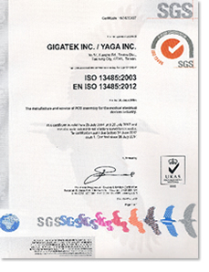

<script src="header.js"></script>

<main class="news-d">

<div class="inner">

	<div class="news-d-t">
		<div class="news-d-n">GIGATEK INC. and YAGA INC. Certified with ISO 13485:2003 Medical Device Quality Management System.</div>
		<div class="news-d-d">2014-08-20</div>


	</div>
	<div class="news-d-i">
		<p>
			August 20, 2014 - Taichung -- GIGATEK INC., and YAGA INC., to continuously satisfy customer needs, have been certified with ISO 13485:2003 Medical Device Quality Management System.

			<br><br>
			Based on the current ISO 9001:2008 Quality Management System (QMS) and IECQ QC 080000:2012 Hazardous Substance Process Management System (HSPM), we further provide assembly and sales of PCBA modules for medical devices, and focus on the pursuit of customer relations with mutual benefits.
		</p>
		<p>
			<div class="title">ISO13485_2003 & EN ISO13485_2012 certificate (GIGA & YAGA)</div>
			<br>
			<a class="venobox" href="public/SRC/images/news/iso13485_2012.jpg"></a>			
		</p>

	</div>
	<a href="news.php" class="btn">Back</a>

</div>

</main>

<nav class="bread">

	<div class="inner">

		<a href="index.php">Home</a><span class="bread-space">/</span><a href="news.php">NEWS</a>

	</div>


</nav>

<script src="footer.js"></script>